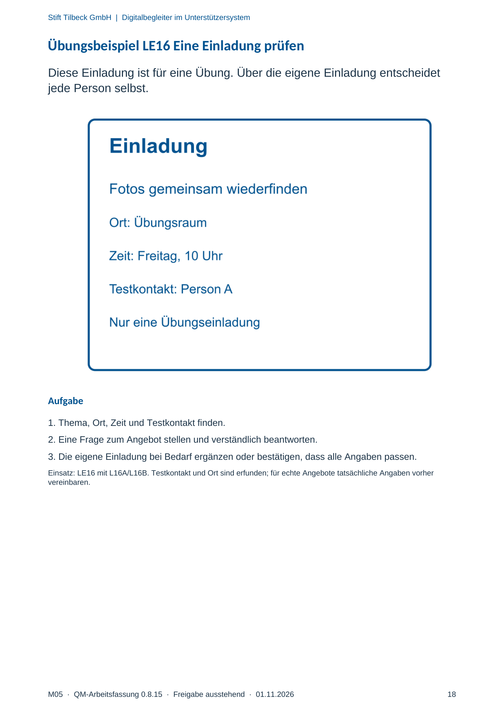

M05 · Originalseite 18
Übungsbeispiel LE16 Eine Einladung prüfen
Gezielte Original-Druckauswahl.
Fragen und Ankreuzfelder werden auf dem Ausdruck bearbeitet. Die Lesefassung speichert keine Antworten.
Lesefassung · Seite 18
Stift Tilbeck GmbH | Digitalbegleiter im Unterstützersystem
M05 · QM-Arbeitsfassung 0.8.15 · Freigabe ausstehend · 01.11.2026 18
Übungsbeispiel LE16 Eine Einladung prüfen
Diese Einladung ist für eine Übung. Über die eigene Einladung entscheidet
jede Person selbst.
Aufgabe
1. Thema, Ort, Zeit und Testkontakt finden.
2. Eine Frage zum Angebot stellen und verständlich beantworten.
3. Die eigene Einladung bei Bedarf ergänzen oder bestätigen, dass alle Angaben passen.
Einsatz: LE16 mit L16A/L16B. Testkontakt und Ort sind erfunden; für echte Angebote tatsächliche Angaben vorher
vereinbaren.
Originalseite ansehen
